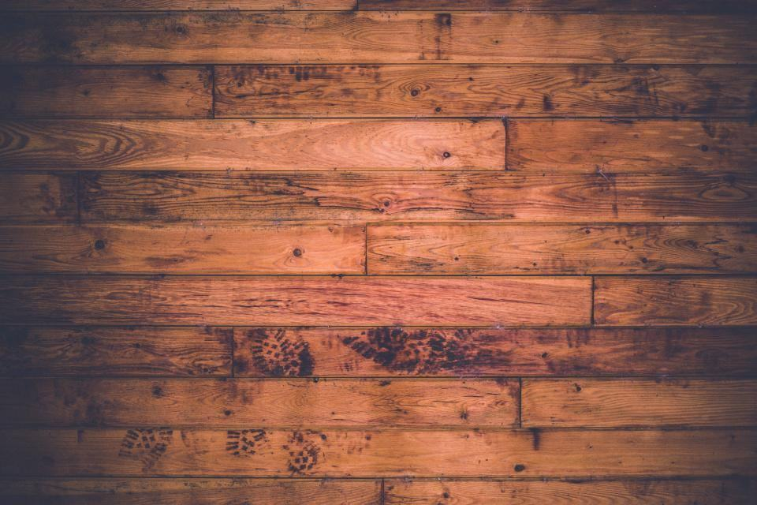

Referenser
Ett urval av uppdrag vi har utfört.
- 2026

Ekholmsskolan
6 200 kvadratmeter i klassrum, korridorer och matsal under sommarlovet.
- 2025

Vrinnevi vårdboende
84 vårdrum och sköljrum, en avdelning i taget medan boendet var i drift.
- 2025

Kv. Hagaberg
312 lägenheter med ny badrumsmatta och köksgolv i takt med VVS-entreprenören.
- 2025

Adolfsbergsskolan
Byte av 4 000 kvadratmeter golv med ljudkrav på 18 dB stegljudsdämpning.
- 2024

Stadshuskvarteret
Tre kontorsplan med textilplattor lagda nattetid under fem veckor.
- 2026

Mjölby gymnasium
Etapp två av tre pågår under höstterminen, kvällar och helger.
Beställarna om Golvlinjen
Henrik W. · Skolfastigheter, Linköping”Vi hade 31 skolor och en sommar. Golvlinjen levererade veckorapporter varje fredag och var klara fyra dagar före tidplan.”
Lena O. · Vrinnevi vårdboende”Det svåra med vårdboenden är att de boende är kvar. Projektledaren planerade varje etapp med avdelningschefen och vi fick inte ett enda klagomål.”
Magnus T. · Norrköping”312 lägenheter och de höll takten med rörfirman hela vägen. Det är inte självklart.”